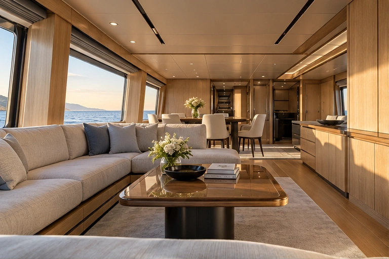

Yacht salons
A yacht salon is the main social interior. Material appearance must work with daylight, sea reflections, cabinetry and service access.
- Decorative positions
- Cabinet fronts, sideboards, bulkhead feature panels, window surrounds and interior door facings.
- Detail priorities
- Grain continuity around adjoining panels, edge returns, access to equipment and glare near windows.
- Environment
- Cabin humidity, sunlight, cleaning and vessel movement. State each exposure in the brief.
- Review sample
- Use a representative curved or joined panel with the actual base and bonding construction. Interior concepts are not deck or immersion qualifications.